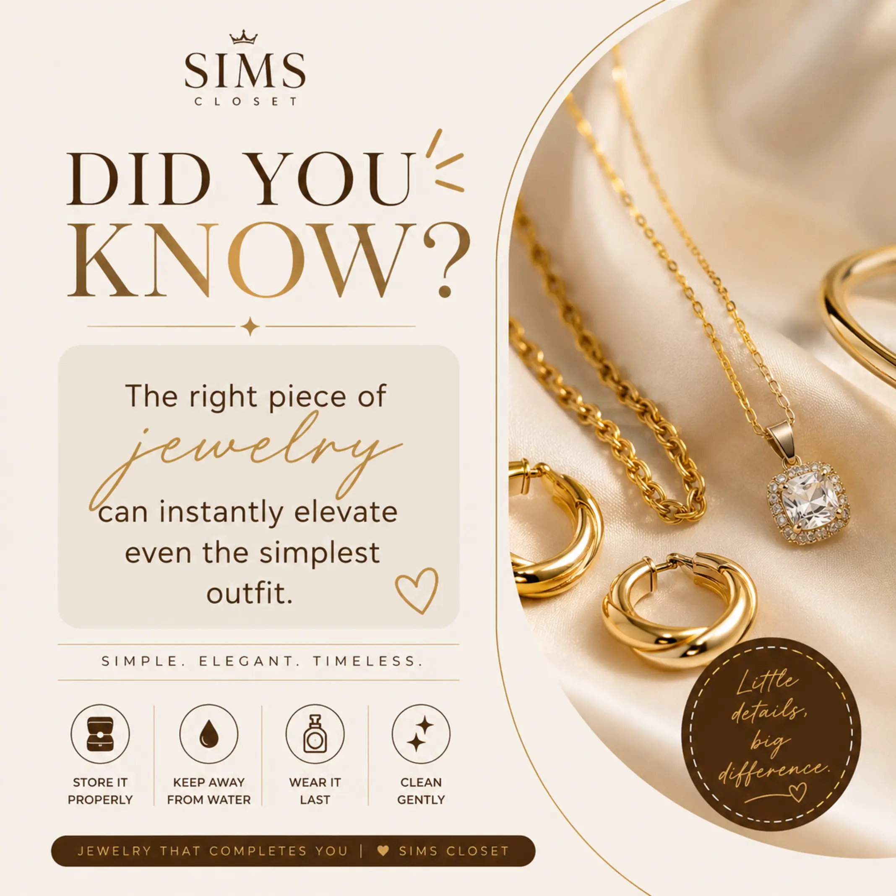

PROJECT 03 | CREATIVE DESIGN
Creativity Beyond Code
Exploring the art of visual communication through colour, typography and thoughtful design. A creative project that reflects my interest in turning ideas into engaging visual experiences.
A Look at My Design

An example of my creative work using Canva.
About the Project
This project showcases my creativity and growing interest in graphic design. I used Canva to create a visual composition, exploring how colours, layouts, typography and other design elements can work together to communicate an idea.
I enjoy the process of experimenting with different visual elements and discovering how small design choices can influence the overall appearance and message of a piece.
Tools and Skills
My Creative Process
I approached this project by exploring the visual elements that could best communicate my intended idea. I experimented with colour combinations, layout arrangements and typography to create a balanced design.
Working on this project strengthened my appreciation for visual details and taught me that effective design is not just about appearance, but also about communicating clearly and intentionally.
What I Learned
- How to use Canva to create visual content.
- The importance of colour combinations.
- How layout influences visual presentation.
- The role of typography in visual communication.
- How creativity and experimentation improve design.
Project Information
Project Type: Creative Design
My Role: Designer
Design Tool: Canva
Focus: Visual Communication and Creativity
Status: Completed